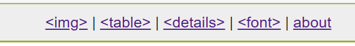

Github Markdown Helper Bookmarklet
Intro
This bookmarklet adds some useful functionality to markdown textareas within Github (for example, PR description, Issue description, Comments and Reviews).
Specifically it provides the following:
- Turn
!image elements (commonly created by drag/dropping, or by pasting images) into <img> elements, giving you control over size (via width & height attributes).
- Insert a blank
<table> element - easier to use for those comfortable with HTML.
- Insert a blank
<details> element - which is really useful when including long code or data snippets in comments.
- Switch the textarea font to a fixed-width font, and disable word wrapping - useful when formatting code or data.
Drag the bookmarklet to your bookmarks bar, navigate to github, and click on it in a page with textareas you want to garnish.
Bookmarklet
To experiment in the playground <textarea> (below) click the bookmarklet.
Or drag it to your bookmarks/favorites bar, navigate to GitHub and test it on a <textarea> there.
In both cases, you should see the following menu appear at the top of the page:

Playground
Build
./build/build.sh
Unminified version
<gh-unminified>
Source
Useful
- https://gist.github.com/asidko/9c7064027039411a11323eaf7d8ea2a4
- https://www.npmjs.com/package/uglify-js
TODO
- Prettify this page.
- Write about undo/deprecation.
- Write about build process.
- Write intro.